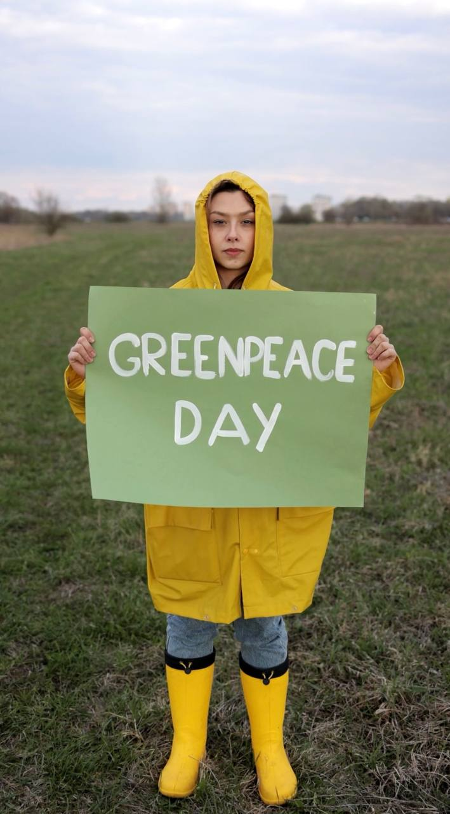
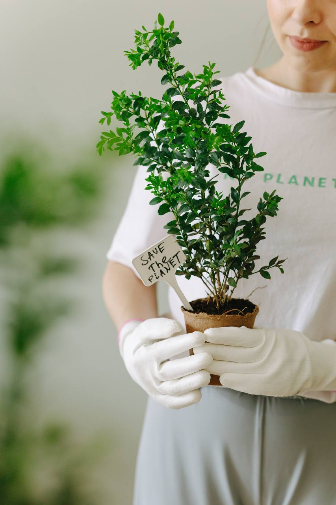

Did you know that every year, approximately 8 million metric tons of plastic waste end up in our oceans?
According to a study by the Ellen MacArthur Foundation, it is estimated that by the year 2050, there could be more plastic than fish in the oceans if we don't take action to reduce plastic waste.


Are you passionate about protecting the environment? Looking for meaningful ways to give back to
nature? Together we advocating for sustainable practices to create a greener and more sustainable
world. Join our community of eco-warriors and embark on a journey to make a positive impact!